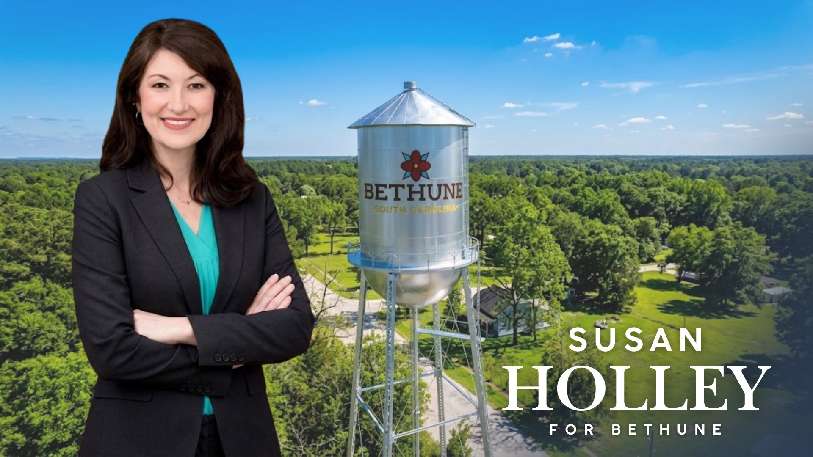

Susan Holley for Mayor — Campaign Website
A responsive campaign website built for Susan Holley's 2026 mayoral race in Bethune, South Carolina. Built as a multi-page React app (Vite) covering Home, About, Videos, Donate, and Get Involved, and deployed on Cloudflare Workers for fast, reliable hosting.
Highlights:
- Custom-built animated photo gallery/carousel with a full-screen lightbox for community event photos
- Integrated PayPal donations with preset and custom contribution amounts
- Embedded Google Forms for volunteer and supporter sign-up
- YouTube video library with expandable "load more" grid
- SEO and social-sharing optimization (Open Graph, Twitter cards, meta descriptions)
- Fully responsive design with an accessible mobile navigation menu
- Structured content sections for platform issues, candidate bio, and community involvement